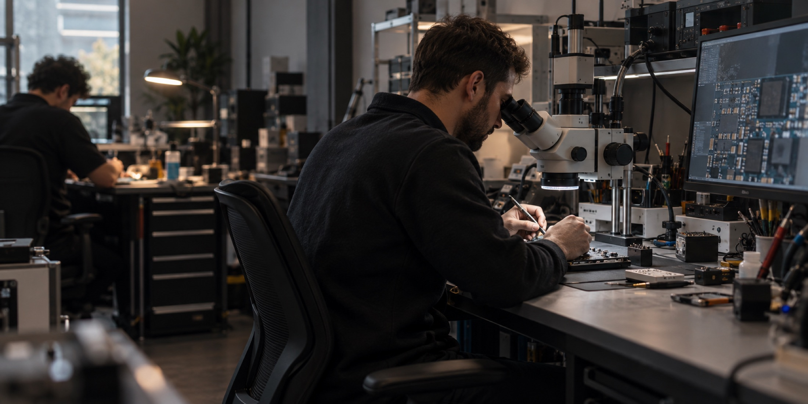

Recepción
Registramos el equipo y la falla que observaste.

Reparaciones
No todas las fallas tienen la misma causa ni todos los equipos necesitan la misma solución. El diagnóstico es el comienzo de cada buen trabajo.
Nuestra manera de trabajar
Primero escuchamos qué pasó. Después revisamos el equipo y te explicamos qué encontramos, qué alternativas existen y cuál creemos que conviene.
No avanzamos sin tu aprobación. No cambiamos piezas por intuición. Cada decisión parte de un diagnóstico.
Diagnóstico
Una misma falla visible puede tener causas muy distintas. Revisar antes de presupuestar evita gastos innecesarios y permite elegir una solución responsable.
Registramos el equipo y la falla que observaste.
Realizamos pruebas y revisamos los puntos relacionados.
Te contamos el diagnóstico, el valor y los tiempos estimados.
El trabajo empieza únicamente cuando decidís avanzar.
Intervenciones
Cada servicio se confirma después de revisar el equipo. Estas son algunas de las intervenciones que realizamos.
Evaluación de imagen, táctil, marco y daños asociados.
Diagnóstico de autonomía, consumo y comportamiento.
Revisión de enfoque, estabilización, lentes y sensores.
Pruebas de conexión, alimentación y componentes relacionados.
Diagnóstico específico antes de definir si es posible intervenir.
Trabajo de precisión sobre placa con equipamiento específico.
Evaluación interna y criterio realista sobre posibilidades de recuperación.
Seguimiento y garantía
Te mantenemos informado durante el proceso y, al entregar, explicamos el trabajo realizado y las condiciones de garantía que correspondan.
La garantía depende del tipo de intervención y se informa antes de avanzar. Si aparece un inconveniente relacionado, queremos que vuelvas y podamos revisarlo.
Preguntas frecuentes